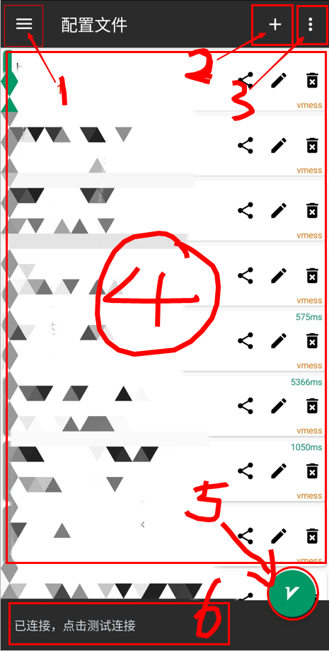
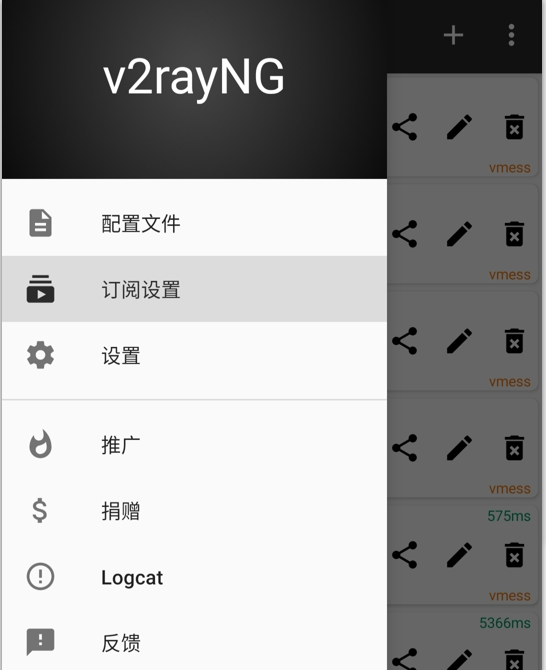
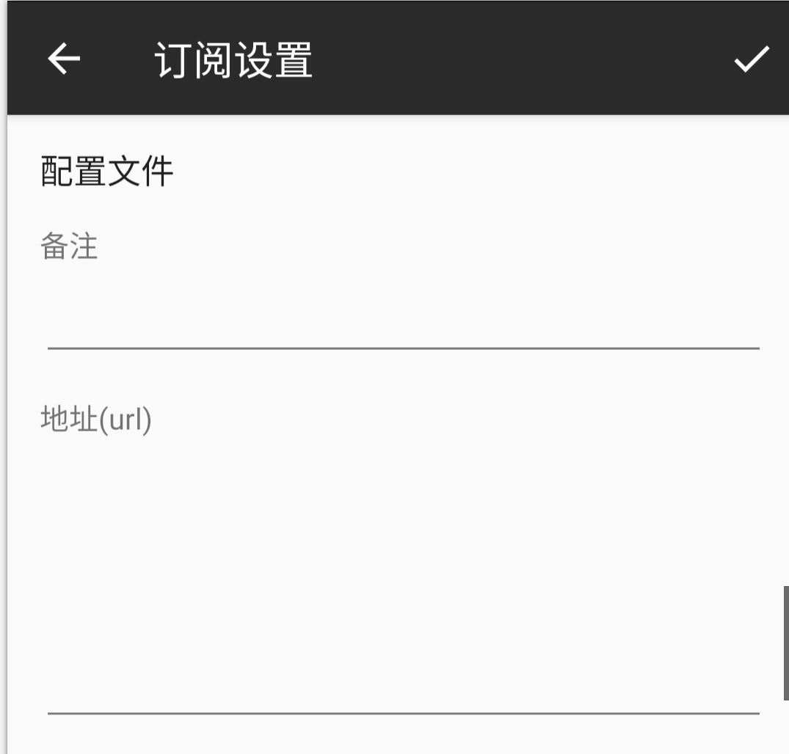
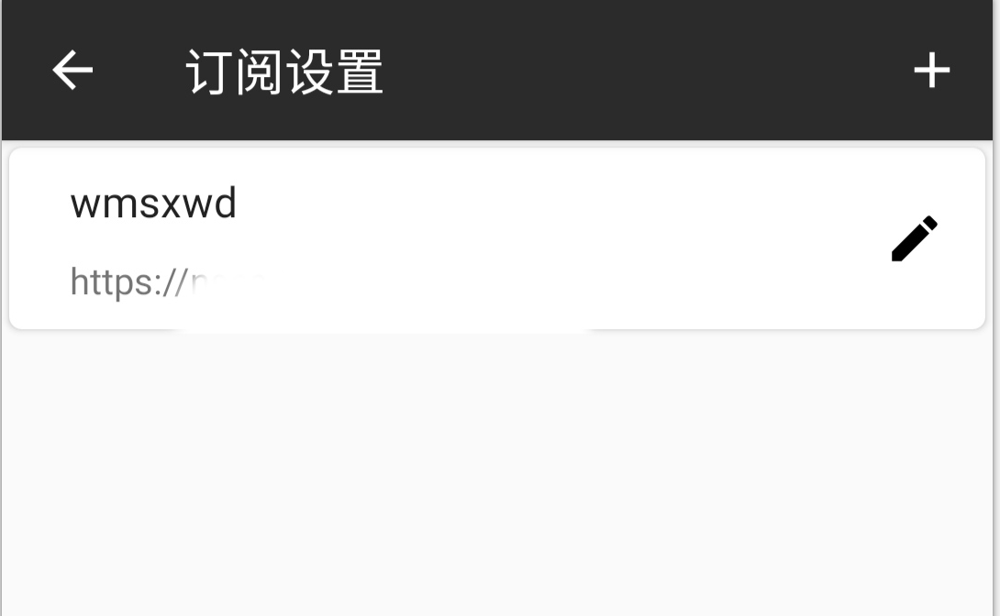
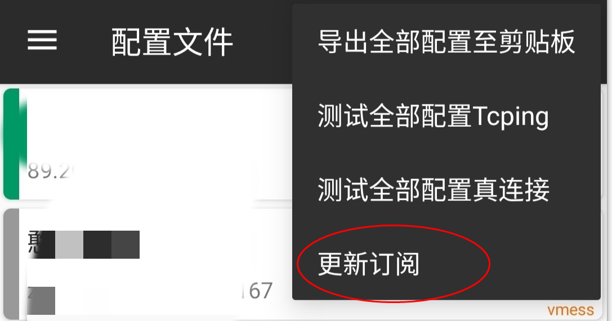

Android 安卓平台
客户端列表
BifrostV

BifrostV 是一个基于 V2Ray 内核的 Android 应用，它支持 VMess、Shadowsocks、Socks 协议。
下载：Play Store | APK Pure
V2RayNG
V2RayNG 是一个基于 V2Ray 内核的 Android 应用，它可以创建基于 VMess 的 VPN 连接。
下载：Play Store | GitHub
Kitsunebi

Kitsunebi 是一个基于 V2Ray 核心的移动平台应用 (iOS, Android)。它可以创建基于 VMess 或者 Shadowsocks 的 VPN 连接。Kitsunebi 支持导入和导出与 V2Ray 兼容的 JSON 配置。
由于使用 V2Ray 核心，Kitsunebi 几乎支持 V2Ray 的所有功能，比如 Mux 和 mKCP。
下载：iTunes | Play Store
下面简单介绍一下安卓客户端的使用
下载
下载按照上面给出的地址进行下载，这里以V2RayNG为例，打开GitHub页面下载安装就好
使用
界面介绍

主界面长这样，
- 1 菜单栏
- 2 节点添加按钮
- 3 常用工具
- 4 节点显示面板
- 5 开关按钮
- 6 当前连接信息
添加订阅信息
- 去网站找到你的v2ray 订阅信息，不知道怎么找看上一节
点击1菜单栏，你会看到这个
】
点订阅设置，你会看到这个

把订阅的备注和地址塞进去，点对号
你会看到这个

点左上角返回主界面，然后点击【2 + 号按钮】，你会看到这个

然后点击更新订阅，稍等一会就会看到一堆节点
然后选择一个心仪的节点，点 5号按钮连接，那个按钮长这样
然后你就会看到连接成功的信息，可以使用了